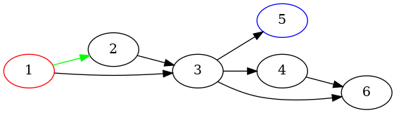

Note
Click here to download the full example code
Attributes¶
Example illustrating how to set node, edge, and graph attributes for visualization.
Out:
strict digraph "" {
graph [epsilon=0.001,
rankdir=LR
];
1 [color=red];
1 -> 2 [color=green];
1 -> 3;
5 [color=blue];
2 -> 3;
3 -> 5;
3 -> 4;
3 -> 6;
4 -> 6;
}
import pygraphviz as pgv
# strict (no parallel edges)
# digraph
# with attribute rankdir set to 'LR'
A = pgv.AGraph(directed=True, strict=True, rankdir="LR")
# add node 1 with color red
A.add_node(1, color="red")
A.add_node(5, color="blue")
# add some edges
A.add_edge(1, 2, color="green")
A.add_edge(2, 3)
A.add_edge(1, 3)
A.add_edge(3, 4)
A.add_edge(3, 5)
A.add_edge(3, 6)
A.add_edge(4, 6)
# adjust a graph parameter
A.graph_attr["epsilon"] = "0.001"
print(A.string()) # print dot file to standard output
A.layout("dot") # layout with dot
A.draw("foo.png") # write to file
Total running time of the script: ( 0 minutes 0.045 seconds)